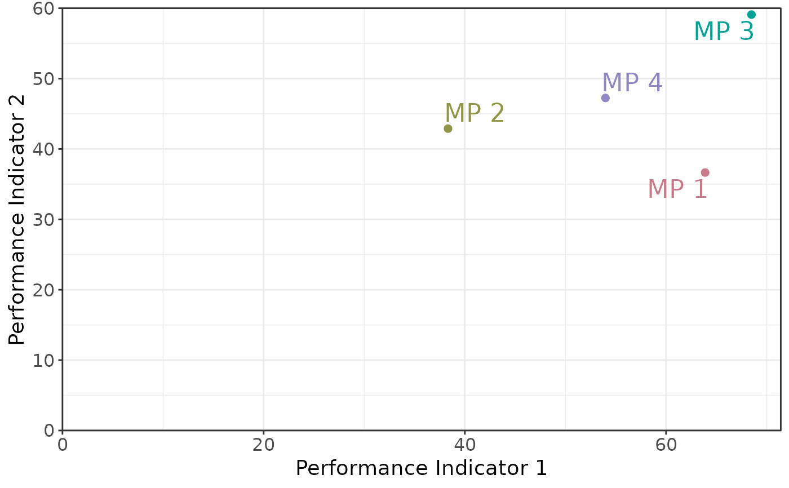
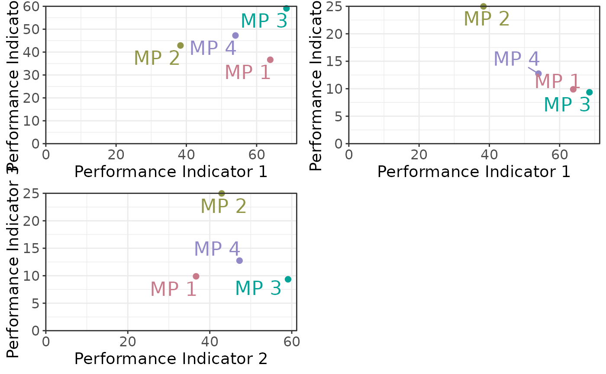

Methods for Creating, Accessing and Assigning Tradeoff objects
Tradeoff-methods.RdThe Tradeoff function is used both to create and modify an Tradeoff-class() object.
and to access and assign Tradeoff for an object of class Slick-class().
See Details.
Usage
Tradeoff(
Code = "",
Label = "",
Description = "",
Value = array(),
Preset = list()
)
Tradeoff(Slick) <- value
# S4 method for class 'missing'
Tradeoff()
# S4 method for class 'character'
Tradeoff(
Code = "",
Label = "",
Description = "",
Value = array(),
Preset = list()
)
# S4 method for class 'list'
Tradeoff(
Code = "",
Label = "",
Description = "",
Value = array(),
Preset = list()
)
# S4 method for class 'Slick'
Tradeoff(Code)
# S4 method for class 'Slick'
Tradeoff(Slick) <- valueArguments
- Code
A short code for the Performance Indicators for this object. A character string length
nPIor a named list for multi-language support. SeeDetails- Label
A short label for the Performance Indicators for this object. Used to label axes on charts. Can be longer than
Codebut recommended to keep short as possible so it shows clearly in plots and tables. A character string lengthnPIor a named list for multi-language support. SeeDetails- Description
A description for the Performance Indicators for this object. Can include Markdown, see
Examples. A character string lengthnPIor a named list for multi-language support. SeeDetails- Value
A numeric array with the stochastic performance indicator values for each operating model (OM), management procedure (MP), and performance indicator (PI) Dimensions: c(
nOM,nMP,nPI)- Preset
An optional named list for the preset buttons in the
App(). The name of the list element will appear as a button in theApp().- Slick
A
Slick-class()object- value
A
Tradeoff-class()object
Details
Objects of class Tradeoff are created with Tradeoff()
Functions
Tradeoff(missing): Create an emptyTradeoffobjectTradeoff(character): Create a populatedTradeoffobjectTradeoff(list): Create a populatedTradeoffobjectTradeoff(Slick): ReturnTradeofffrom aSlick-class()objectTradeoff(Slick) <- value: Assign aTradeoff-class()object to aSlick-class()object
Examples
# Generate dummy values
nOM <- 2
nMP <- 4
nPI <- 4
values <- array(NA, dim=c(nOM, nMP, nPI))
pi_means <- runif(nPI, 5, 50)
for (om in 1:nOM) {
for (mp in 1:nMP) {
for (pi in 1:nPI) {
values[om, mp, pi] <- rlnorm(1,log(pi_means[pi]), 0.4)
}
}
}
# Create and populate Object
tradeoff <- Tradeoff(Code=c('PI1', 'PI2', 'PI3', 'PI4'),
Label=c('Performance Indicator 1',
'Performance Indicator 2',
'Performance Indicator 3',
'Performance Indicator 4'),
Description = c('This is the description for PI 1',
'This is the description for PI 2',
'This is the description for PI 3',
'This is the description for PI 4'),
Value=values)
# Check
Check(tradeoff)
#>
#> ── Checking: "Tradeoff" ──
#>
#> ✔ Complete
# Add to `Slick` object
slick <- Slick()
Tradeoff(slick) <- tradeoff
# Plots
plotTradeoff(slick)
#> ℹ Note: `MPs` is empty. Using default MP names and colors

plotTradeoff(slick, c(1,1,2), c(2,3,3))
#> ℹ Note: `MPs` is empty. Using default MP names and colors
